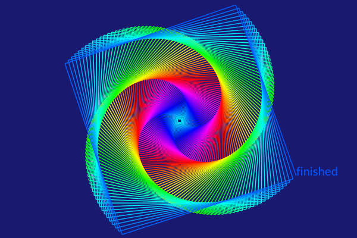
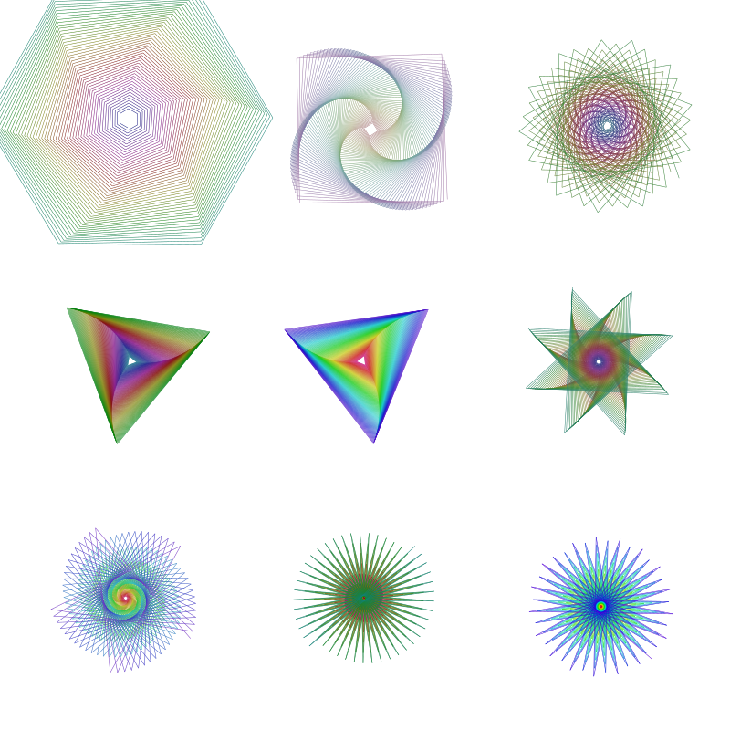
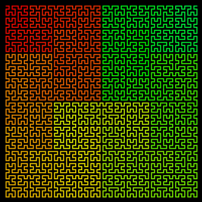

Turtle graphics
Luxor provides some basic "turtle graphics" functions. Functions to control the turtle begin (somewhat unusually) with a capital letter: Forward, Turn, Circle, Orientation, Towards, Rectangle, Pendown, Penup, Pencolor, Penwidth, and Reposition.
Angles are specified in clockwise degrees rather than radians.
using Luxor, ColorsDrawing(600, 400, "../assets/figures/turtles.png")origin()background("midnightblue")🐢 = Turtle() # you can type the turtle emoji with \:turtle:Pencolor(🐢, "cyan")Penwidth(🐢, 1.5)n = 5for i in 1:400 global n Forward(🐢, n) Turn(🐢, 89.5) HueShift(🐢) n += 0.75endfontsize(20)Message(🐢, "finished")finish()
| List of words the turtle knows | Arguments | Action |
|---|---|---|
Forward | n (1) | More forward by d units |
Turn | θ (5°) | Increase the turtle's rotation by n° |
Circle | r (1) | Draw filled circle centered at current pos |
HueShift | n (1) | Shift the Hue of the turtle's pen color by n |
Message | t ("") | Output text t |
Orientation | θ (5°) | Set the turtle's orientation to θ degrees |
Pen_opacity_random | Set opacity to random value | |
Pencolor | r g b | Set the Red, Green, and Blue values |
Pendown | Start drawing | |
Penup | Stop drawing | |
Penwidth | w | Set the width of the line to w |
Pop | Move turtle to the value stored on the stack | |
Push | Save the turtle's position on the stack | |
Randomize_saturation | Randomize the saturation of the current color | |
Rectangle | w h | Draw filled rectangle centered at current pos |
Reposition | pt | Place turtle at new position pt |
Towards | pt | Rotate turtle to face towards a point |
The turtle commands expect a reference to a turtle as the first argument (it doesn't have to be a turtle emoji!).
You can have any number of turtles active at a time.
quantity = 9turtles = [Turtle(O, true, 2π * rand(), (rand(), rand(), 0.5)...) for i in 1:quantity]Reposition.(turtles, first.(collect(Tiler(800, 800, 3, 3))))n = 10Penwidth.(turtles, 0.5)for i in 1:300 global n Forward.(turtles, n) HueShift.(turtles) Turn.(turtles, [60.1, 89.5, 110, 119.9, 120.1, 135.1, 145.1, 176, 190]) n += 0.5end
A turtle graphics approach lends itself well to recursive programming. This short recursive function draws a Hilbert curve.
function hilbert(t::Turtle, level, angle, lengthstep) level == 0 && return HueShift(t, 0.1) Turn(t, angle) hilbert(t, level-1, -angle, lengthstep) Forward(t, lengthstep) Turn(t, -angle) hilbert(t, level-1, angle, lengthstep) Forward(t, lengthstep) hilbert(t, level-1, angle, lengthstep) Turn(t, -angle) Forward(t, lengthstep) hilbert(t, level-1, -angle, lengthstep) Turn(t, angle)end@draw beginbackground("black")setline(2)setlinecap("round")hilbert(Turtle(first(BoundingBox()) + (12, 12), true, 0, (1, 0, 0)), 6, # level 90, # turn angle, in degrees 6 # steplength )end